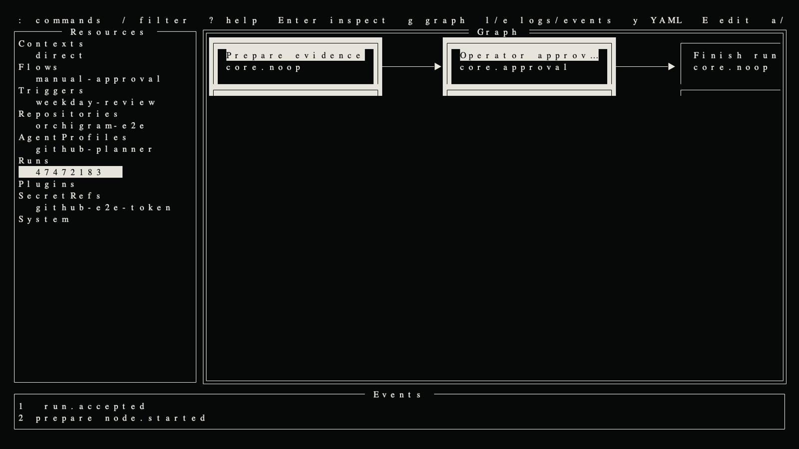
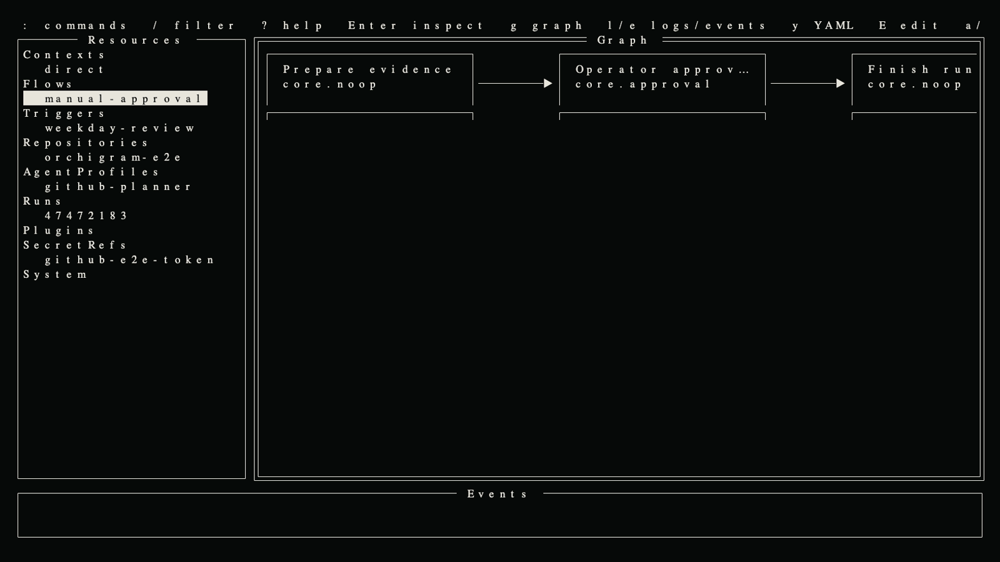

Trigger receipt
persisted
Run scheduled and event-driven agent pipelines across repositories and servers—without a web control plane.
git clone https://github.com/alexrett/orchigram && cd orchigram

A small single-node daemon owns durable state. Every operator surface is a stateless client of the same API.
Strict YAML, typed nodes, CEL conditions, finite loops and immutable compiled plans.
Trigger receipts, SQLite outbox, pinned plan hashes and restart-safe approvals.
gRPC contracts, versioned bundles, crash isolation and explicit at-least-once effects.
Unix socket locally, OpenSSH StreamLocal remotely—the same API everywhere.
Every accepted occurrence is persisted before execution starts. Effects may repeat; identities do not.
persisted
compiled
completed
waiting
pending
All times UTC · safe to restart · deterministic local identities · reconciled external effects
Inspect the same graph as a definition, a live overlay or a historical replay. Drill into nodes, logs, events and YAML.

git clone https://github.com/alexrett/orchigram && cd orchigrammake buildsudo ./bin/orchigram install --plugin-dir ./binorchigramClient: macOS/Linux · Server: Linux · amd64/arm64